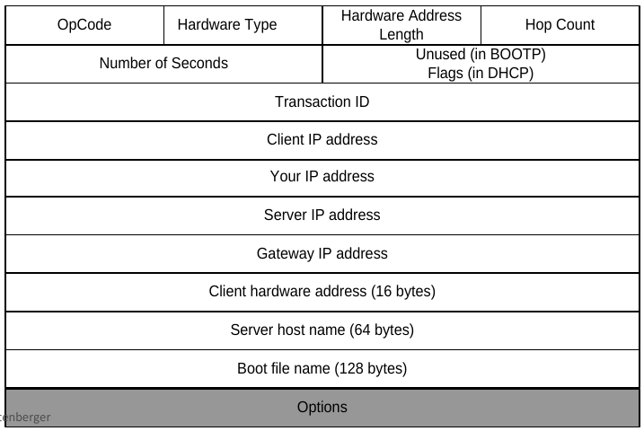

Dynamic Host Configuration Protocol (DHCP) ermöglicht die Zuweisung von Netzwerkkonfigurationen (IP-Adresse, DNS, Standard Gateway, etc.) an Clients durch Server. Der Vorläufer von DHCP war BOOTP.
DHCPDISCOVER als broadcast (Zieladresse
255.255.255.255) mit Quelladresse 0.0.0.0
DHCPOFFER welches ein
Vorschlag für eine geleaste IP Adresse enthält
DHCPOFFER auch als unicast an die vorläufige IP-Adresse
gesendet werden.
DHCPOFFER und wählt einen aus (z.B. auf Grund der
lease time)
DHCPREQUEST als broadcast
DHCPREQUEST zu einem DHCPOFFER erfolgt über einen
Server identifier
DHCPPACK, welches weitere
Netzwerkkonfigurationen enthält
Erneuerung des address lease nach der halben lease time.
Abmelden einer IP-Adresse mit einem DHCPRELEASE

Figure 1: DHCP-Header
Felder: